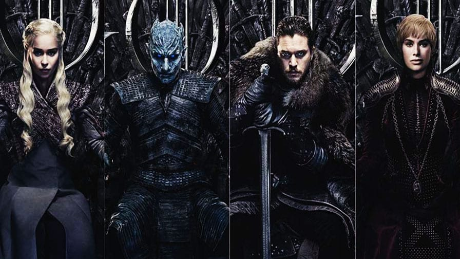
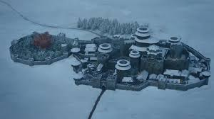
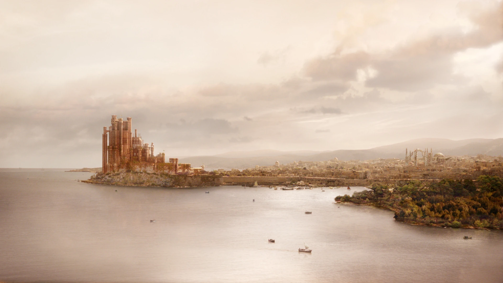

Winter Is Coming
A épica saga de Westeros que conquistou o mundo
Destaques

O Trono de Ferro
Saiba mais sobre o símbolo de poder em Westeros

Os Dragões
A história dos dragões e dos Targaryen

A Muralha
Conheça a gigantesca estrutura que protege o reino
A Série
Game of Thrones é uma série de televisão norte-americana criada por David Benioff e D. B. Weiss, baseada na série de livros As Crônicas de Gelo e Fogo, escrita por George R. R. Martin.
A série estreou em 17 de abril de 2011 no canal HBO e rapidamente se tornou um fenômeno mundial, conhecida por sua narrativa complexa, personagens ricamente desenvolvidos e reviravoltas surpreendentes.
Com oito temporadas e 73 episódios, Game of Thrones foi filmada em diversos países, incluindo Irlanda do Norte, Croácia, Islândia e Espanha, utilizando locações reais para criar o mundo fantástico de Westeros.
Temporadas
Temporada 1 (2011)
10 episódios
Temporada 2 (2012)
10 episódios
Temporada 3 (2013)
10 episódios
Temporada 4 (2014)
10 episódios
Temporada 5 (2015)
10 episódios
Temporada 6 (2016)
10 episódios
Temporada 7 (2017)
7 episódios
Temporada 8 (2019)
6 episódios

Prêmios e Reconhecimento
- 59 Emmy Awards
- 5 Golden Globe Awards
- 11 Screen Actors Guild Awards
- Série mais premiada da história do Emmy
Casas Nobres de Westeros
As Sete Casas Nobres de Westeros são as famílias mais poderosas dos Sete Reinos, cada uma com sua própria história, lema e características distintas. Conheça as principais casas abaixo:

Casa Stark
"O Inverno Está Chegando"
Norte
A Casa Stark de Winterfell é uma das famílias mais antigas e nobres de Westeros, conhecida por sua honra e conexão com os lobos gigantes.
Membros Principais:
- Eddard Stark
- Catelyn Stark
- Jon Snow
- Sansa Stark
- Arya Stark
- Bran Stark
- Rickon Stark

Casa Lannister
"Ouça-me Rugir"
Terras Ocidentais
A Casa Lannister de Rochedo Casterly é uma das famílias mais ricas e poderosas de Westeros, conhecida por sua astúcia e riqueza.
Membros Principais:
- Tywin Lannister
- Cersei Lannister
- Jaime Lannister
- Tyrion Lannister
- Joffrey Baratheon
- Myrcella Baratheon
- Tommen Baratheon

Casa Targaryen
"Fogo e Sangue"
Pedra do Dragão (originalmente)
A Casa Targaryen é uma família nobre que governou Westeros por quase 300 anos, conhecida por seus cabelos prateados e por domar dragões.
Membros Principais:
- Daenerys Targaryen
- Viserys Targaryen
- Aegon Targaryen (Jon Snow)
- Rhaegar Targaryen
- Aerys II Targaryen

Casa Baratheon
"Nossa é a Fúria"
Terras da Tempestade
A Casa Baratheon de Ponta Tempestade ascendeu ao poder quando Robert Baratheon derrubou a dinastia Targaryen na Rebelião de Robert.
Membros Principais:
- Robert Baratheon
- Stannis Baratheon
- Renly Baratheon
- Joffrey Baratheon
- Myrcella Baratheon
- Tommen Baratheon

Casa Greyjoy
"Nós Não Semeamos"
Ilhas de Ferro
A Casa Greyjoy de Pyke governa as Ilhas de Ferro, um grupo de ilhas rochosas cujos habitantes são temidos como saqueadores e piratas.
Membros Principais:
- Balon Greyjoy
- Yara Greyjoy
- Theon Greyjoy
- Euron Greyjoy

Casa Tyrell
"Crescemos Fortes"
Campina
A Casa Tyrell de Jardim de Cima é a mais rica das Grandes Casas devido às terras férteis da Campina e ao comércio de alimentos.
Membros Principais:
- Olenna Tyrell
- Mace Tyrell
- Margaery Tyrell
- Loras Tyrell
Personagens Principais
Game of Thrones apresenta um elenco vasto e complexo de personagens. Conheça os principais abaixo:

Jon Snow
Casa Stark/Targaryen
Interpretado por Kit Harington
Filho bastardo de Eddard Stark que se torna Lorde Comandante da Patrulha da Noite e peça chave na guerra contra os Caminhantes Brancos.

Daenerys Targaryen
Casa Targaryen
Interpretada por Emilia Clarke
A última herdeira da dinastia Targaryen, conhecida como a Mãe dos Dragões, que busca recuperar o Trono de Ferro de sua família.

Tyrion Lannister
Casa Lannister
Interpretado por Peter Dinklage
O "Duende", conhecido por sua inteligência e sagacidade, que se torna um dos conselheiros mais importantes de Daenerys Targaryen.

Cersei Lannister
Casa Lannister
Interpretada por Lena Headey
Rainha de Westeros, conhecida por sua crueldade e determinação em manter o poder a qualquer custo.

Arya Stark
Casa Stark
Interpretada por Maisie Williams
A filha mais nova de Ned Stark que se torna uma guerreira habilidosa e busca vingança contra aqueles que prejudicaram sua família.

Sansa Stark
Casa Stark
Interpretada por Sophie Turner
A filha mais velha de Ned Stark que evolui de uma jovem ingênua para uma líder astuta e poderosa do Norte.
Galeria
Explore imagens icônicas de Game of Thrones, desde locações impressionantes até cenas memoráveis.

